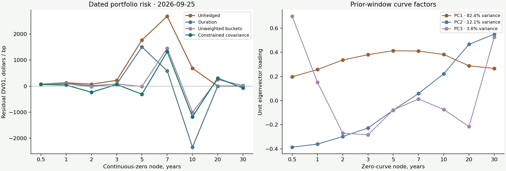
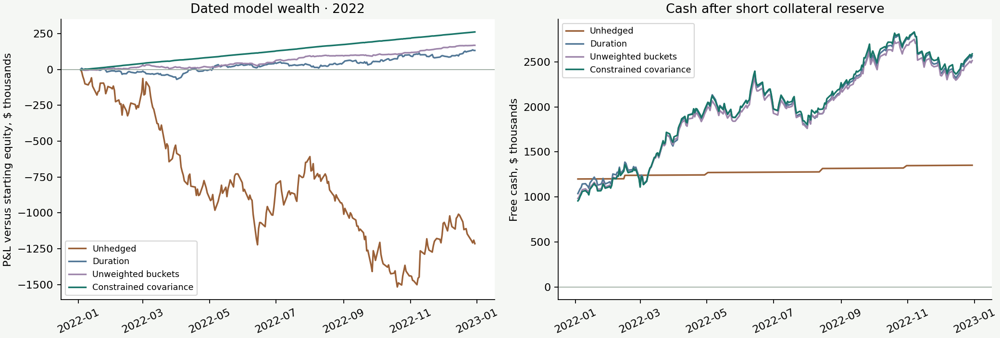
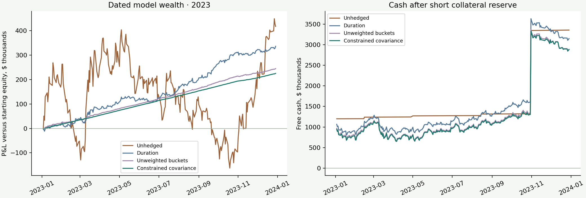

Treasury research · Version 1.0.0
Treasury Curve, Bond Pricing and Hedge Engine
Dated Treasury cash flows, audited coupon accounting and risk-constrained hedge decisions.
Research release complete. Historical source review remains open for ten quarantined curve dates. Model prices and hypothetical execution are not current market quotes or realized investment performance.
Latest dated portfolio PV$11,637,353.602026-09-25
Estimated covariance risk reduction98.99%Prior-window variance, subject to bounds
Parallel DV01 remaining$0.00Independent post-solver validation
Actual Treasury terms, hypothetical holdings
Dirty PV = clean PV + accrued interest. Dates use regular semiannual schedules; payment calendars and accrual conventions are documented.
Risk objective and curve factors

The constrained optimizer minimizes covariance-weighted risk, matches parallel DV01 and applies gross-face and instrument limits. Training ends on 2026-09-24, before the valuation date. PCA factors describe the prior sample; they are not forecasts.
Full repricing under rate shocks
Scenario definitions match the original research report and JSON pack. All dated cash flows are repriced; these results precede hypothetical execution costs.
2022 dated accounting evaluation
Monthly weights use prior observed curve and covariance levels strictly before trade date; current-date curve only prices the trade/mark

2023 dated accounting evaluation
Monthly weights use prior observed curve and covariance levels strictly before trade date; current-date curve only prices the trade/mark

Independent Treasury auction price checks
Coupon-equivalent price/yield conventions reproduce the published original auction prices. These reference prices do not validate today's fitted-curve mark.
Source audit and unresolved historical exceptions
200,610 published zero-yield comparisons; threshold 0.006 bp remains fixed.
Primary curve source: Federal Reserve GSW. Actual instrument sources and all acquisition metadata are preserved in the JSON pack and config. Raw curve SHA-256: 379cae673092e64aea0baa58796b276ebc5c9c7f2c342d66e7b1fe1e52fd0421.
Scope and model assumptions
- Actual Treasury security terms and dates are sourced from official auction releases; face allocations are hypothetical.
- Fitted off-the-run Treasury curve marks are not executable prices, bid/ask quotes or independent current CUSIP market-price checks.
- GSW historical observations are the current revised download, not historical release vintages.
- Monthly decisions use previous available curves and strictly earlier covariance levels; current-date curves only mark trades and holdings.
- Execution at fitted dirty PV is assumed. Transaction cost is 1 bp of changed dirty notional; no actual market fills are represented.
- Positive cash and restricted collateral earn an assumed nominal 2% annual cash/rebate rate; debit cash is charged 5%, compounded daily on ACT/365F. These fixed assumptions are not observed repo rates or secured-lending offers.
- Full short market value plus 2% is reserved as collateral; starting capital buffer is 10% of target face. Collateral/funding breaches are reported, not covered by silent external cash.
- Targets are held to maturity without replenishment. Each annual evaluation restarts with equal initial equity across hedge methods.
- No overnight-indexed swaps, futures CTD/convexity adjustment, optionality or derivatives margin model is included in this cash-Treasury release.
- Ten older source curves remain quarantined. Required evaluation dates and independent auction conventions must pass before publication.
Run the interactive portfolio interface with python -m streamlit run app.py. Use the risk workbook for linked exposures; regenerate Python outputs to recompute optimizations and dated history.